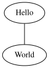
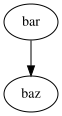

Scalable figure and image handling¶
LinuxDoc brings the linuxdoc.kfigure Sphinx extension which implements
scalable image handling. Scalable here means; scalable in sense of the build
process. The build for image formats depends on image’s source format and
output’s destination format. Different builder prefer different image formats,
e.g. latex builder prefer PDF while html builder prefer SVG format for
images. To get a pdf from a SVG input a third party converter is needed.
Normally in absence of such a converter tool, the build process will break.
From the authors POV it’s annoying to care about the build process when handling
with images, especially since he has no possibility to influence the build
process on every build host out there.
With the directives of linuxdoc.kfigure, if a third party converter is
missed, the build process will spit out a message about and continues with a
lower quality in the output. Even if the output is e.g. a raw SVG or DOT, in
some use cases it might be a solution that fits. As we say, its scalable: If
you are the operator of a build host, install the recommended tools and you will
always get the best quality. For this the linuxdoc.kfigure implements
a central convert_image function
which is used by the directives:
.. kernel-figure[ref]Except remote URI and glob pattern, it’s a full replacement for the figure directive (
KernelFigure).. kernel-image[ref]A full replacement (except remote URI and glob pattern) for the image directive (
KernelImage).. kernel-render[ref]Renders the block content by a converter tool (
KernelRender). Comparably to the figure directive with the assumption that the content of the image is given in the block and not in an external image file. This directive is helpful for use cases where the image markup is editable and written by the author himself (e.g. a small DOT graph).Has all the options known from the figure directive, plus option caption. If caption has a value, a figure node with the caption is inserted. If not, a image node is inserted.
Supported markups:
DOT: render embedded Graphviz’s DOC language (Graphviz’s dot)
SVG: render embedded Scalable Vector Graphics
… developable
As already mentioned, the directives kernel-figure, kernel-image and
kernel-render are based on one central function. In the current expansion stage
convert_image uses the following
tools (latex builder is used when generating PDF):
dot(1)Graphviz’s dot commandconvert(1)command from ImageMagick
To summarize the build strategies:
DOT content, if Graphviz’s dot command is not available
html builder: the DOT language is inserted as literal block.
latex builder: the DOT language is inserted as literal block.
SVG content
html builder: always insert SVG
latex builder: if ImageMagick is not available the raw SVG is inserted as literal-block.
recommended build tools
With the directives from linuxdoc.kfigure the build process is
flexible. To get best results in the generated output format, install
ImageMagick and Graphviz.
kernel-figure & kernel-image¶
If you want to add an image, you should use the kernel-figure and
kernel-image directives. Except remote URI and glob pattern, they are full
replacements for the figure and image
directive. Here you will find a few recommendations for use, for a complete
description see reST markup.
If you want to insert a image into your documentation, prefer a scalable vector-graphics format over a raster-graphics format. With scalable vector-graphics there is a chance, that the rendered output going to be best. SVG is a common and standardized vector-graphics format and there are many tools available to create and edit SVG images. That’s why its recommended to use SVG in most use cases.
In the literal block below, you will find a simple example on how to insert a
SVG figure (image) with the kernel[-figure|image] directive, about
rendering please note build tools:
.. _svg_image_example:
.. kernel-figure:: svg_image.svg
:alt: simple SVG image
SVG figure example
The first line in this example is only to show how an anchor is set and what
a reference to it looks like :ref:`svg_image_example`.
kernel-figure SVG

SVG figure example¶
The first line in this example is only to show how an anchor is set and what a reference to it looks like SVG figure example.
In addition to the figure and image, kernel-figure and kernel-image also support DOT formated files. A simple example is shown in figure DOT’s hello world example.
.. kernel-figure:: hello.dot
:alt: hello world
DOT's hello world example
kernel-figure DOT

DOT’s hello world example¶
kernel-render¶
Embed render markups (languages) like Graphviz’s DOT or SVG are provided by
the kernel-render directive. The kernel-render directive has all the options
known from the image directive (kernel-figure), plus option
caption. If caption has a value, a figure like node is
inserted into the doctree. If not, a image like node is
inserted.
DOT markup¶
A simple example of embedded DOT is shown in figure Embedded DOT (Graphviz) code:
.. _hello_dot_render:
.. kernel-render:: DOT
:alt: foobar digraph
:caption: Embedded **DOT** (Graphviz) code
digraph foo {
"bar" -> "baz";
}
A ``caption`` is needed, if you want to refer the figure:
:ref:`hello_dot_render`.
Please note build tools. If Graphviz is installed, you will see an vector image. If not, the raw markup is inserted as literal-block.
kernel-render DOT

Embedded DOT (Graphviz) code¶
A caption is needed, if you want to refer the figure:
Embedded DOT (Graphviz) code.
SVG markup¶
A simple example of embedded SVG is shown in figure Embedded SVG markup:
.. _hello_svg_render:
.. kernel-render:: SVG
:caption: Embedded **SVG** markup
:alt: so-nw-arrow
<?xml version="1.0" encoding="UTF-8"?>
<svg xmlns="http://www.w3.org/2000/svg" version="1.1"
baseProfile="full" width="70px" height="40px"
viewBox="0 0 700 400"
>
<line x1="180" y1="370"
x2="500" y2="50"
stroke="black" stroke-width="15px"
/>
<polygon points="585 0 525 25 585 50"
transform="rotate(135 525 25)"
/>
</svg>
kernel-render SVG

Embedded SVG markup¶